#include<stdio.h>
#include<stdlib.h>
void program1(int N) {
int *arr = malloc(N); // Problematic allocation
for(int i = 0; i < N; i++) {
arr[i] = i * i;
printf("arr[%d] = %d\n", i, arr[i]);
}
}
int main() {
program1(4);
}
# Compile with debugging symbols
gcc -Wall -Werror -g -std=c99 -o program1 -O0 program1.c
# Run normally
./program1
Output:
arr[0] = 0
arr[1] = 1
arr[2] = 4
arr[3] = 9
Program appears to work normally but contains hidden bugs (we are booking N bytes we need N*(size of the var))
valgrind --leak-check=full ./program1
Key Valgrind Findings:
Invalid Write Errors (3 occurrences)
==51351== Invalid write of size 4
==51351== at 0x1091AC: program1 (program1.c:7)
Cause: Writing to arr[1], arr[2], and arr[3] in a 4-byte buffer (only space for 1 int)
Invalid Read Errors (3 occurrences)
==51351== Invalid read of size 4
==51351== at 0x1091C2: program1 (program1.c:8)
Cause: Reading from beyond allocated memory
Memory Leak
==51351== 4 bytes in 1 blocks are definitely lost
Cause: Missing free(arr)
int *arr = malloc(N); // Allocates N bytes instead of N integers
System Specs:
sizeof(int) = 4 bytes (typical 64-bit systems)
Needed: 4 × 4 = 16 bytes
Allocated: 4 bytes
Memory Layout Visualization:
Allocated memory: [0][ ][ ][ ] (4 bytes)
Actual usage: [0][1][4][9] (16 bytes)
^ Buffer overflow!
CWE Identification CWE-787: Out-of-bounds Write
Writing to memory locations outside the allocated buffer
CWE-788: Access of Memory Location After End of Buffer
Both read and write operations beyond buffer limits
Fixed Code (program1_fixed.c)
#include<stdio.h>
#include<stdlib.h>
void program1(int N) {
int *arr = malloc(N * sizeof(int)); // Correct allocation
if(arr == NULL) {
fprintf(stderr, "Memory allocation failed\n");
return;
}
for(int i = 0; i < N; i++) {
arr[i] = i * i;
printf("arr[%d] = %d\n", i, arr[i]);
}
free(arr); // Prevent memory leak
}
int main() {
program1(4);
}
gcc -Wall -Werror -g -std=c99 -o program1_fixed program1_fixed.c
valgrind --leak-check=full ./program1_fixed
Clean Valgrind Output:
==51521== HEAP SUMMARY:
==51521== in use at exit: 0 bytes in 0 blocks
==51521== total heap usage: 2 allocs, 2 frees, 1,044 bytes allocated
==51521==
==51521== All heap blocks were freed -- no leaks are possible
==51521== ERROR SUMMARY: 0 errors from 0 contexts
Key Lessons Memory Allocation:
Always use malloc(N * sizeof(datatype))
Check return value for NULL
Valgrind Usage:
Essential for detecting hidden memory errors
Always run with --leak-check=full
Memory Safety:
Buffer overflows can exist without immediate crashes
Undefined behavior != Safe behavior
Secure Coding:
Always pair malloc() with free()
Use compiler flags (-Wall -Werror) for basic checks
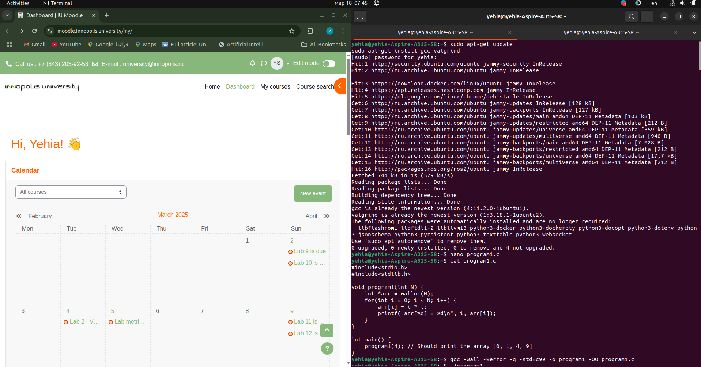
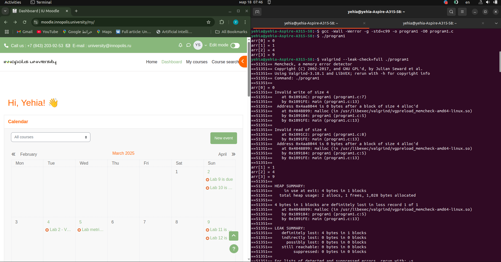
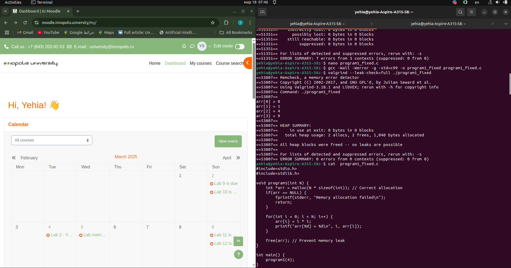
Step 1: Compilation
gcc -Wall -Werror -g -std=c99 -o program2 program2.c
Step 2: Run the Program Normally
./program2
Output (incorrect/garbage values):
arr[0] = 1196867422
arr[1] = 6
arr[2] = -1661680662
arr[3] = 114500276
Why?
The program prints garbage values because it accesses memory after freeing it (use-after-free).
Step 3: Run with Valgrind
valgrind ./program2
Key Valgrind Findings:
==64712== Invalid read of size 4
==64712== at 0x10927E: program2 (program2.c:18)
==64712== Address 0x4aa8040 is 0 bytes inside a block of size 16 free'd
==64712== ERROR SUMMARY: 4 errors from 1 contexts
Problem: The program reads from memory that has already been freed (free(arr) is called in work(), but program2() tries to print arr afterward).
CWE Reference: CWE-416: Use After Free.
Step 4: Root Cause Analysis Memory Lifetime Issue:
void work(int* arr, unsigned N) {
free(arr); // Freed here
}
void program2(unsigned N) {
// ...
work(arr, N);
for(int i=0; i<N; i++) {
printf("arr[%d] = %d\n", i, arr[i]); // Accessed after free
}
}
The array arr is freed in work() but later accessed in program2().
Secondary Issue (incorrect initialization):
memset(arr, 0, sizeof(*arr)); // Only initializes the first element
sizeof(*arr) = 4 bytes (size of int), so only arr[0] is initialized to 0.
Step 5: Fix the Code Updated Code (program2_fixed.c):
#include<stdio.h>
#include<stdlib.h>
#include<string.h>
void work(int* arr, unsigned N) {
for(int i=1; i<N; i++) {
arr[i] = arr[i-1] * 2;
}
// Removed free(arr) from here
}
void program2(unsigned N) {
int* arr = (int*)malloc(N * sizeof(*arr));
memset(arr, 0, N * sizeof(*arr)); // Correct initialization
arr[0] = 1;
work(arr, N);
for(int i=0; i<N; i++) {
printf("arr[%d] = %d\n", i, arr[i]);
}
free(arr); // Free after usage
}
int main() {
program2(4); // Now prints [1, 2, 4, 8]
}
Fixes:
Use-After-Free:
Memory Initialization:
Step 6: Verify the Fix Recompile and Run:
gcc -Wall -Werror -g -std=c99 -o program2_fixed program2_fixed.c
valgrind ./program2_fixed
Output:
arr[0] = 1
arr[1] = 2
arr[2] = 4
arr[3] = 8
Valgrind Report:
==64800== HEAP SUMMARY:
==64800== in use at exit: 0 bytes in 0 blocks
==64800== All heap blocks were freed -- no leaks are possible
==64800== ERROR SUMMARY: 0 errors from 0 contexts
Key Takeaways
Memory Lifetime Management:
Never access memory after freeing it.
Always free memory in the same scope where it was allocated (or ensure proper ownership transfer).
Secure Initialization:
Valgrind Usage:
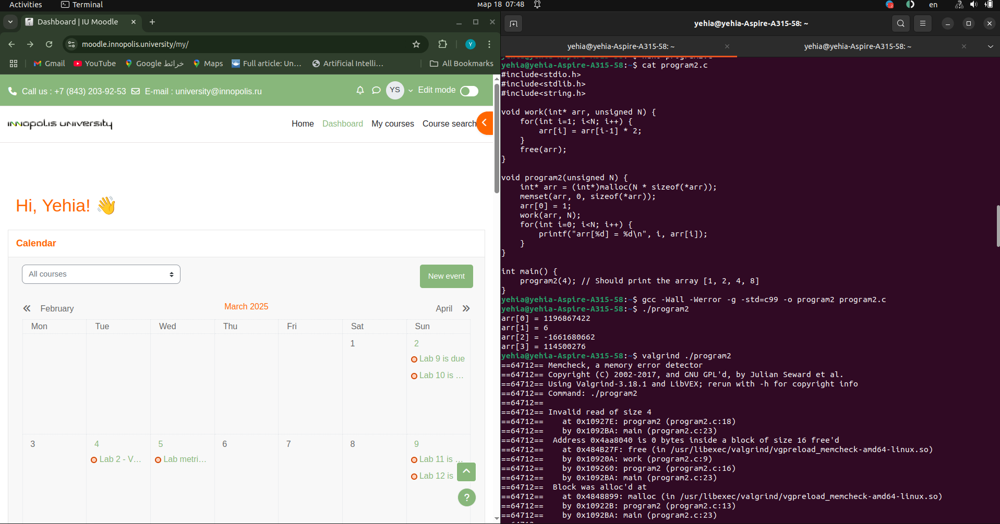
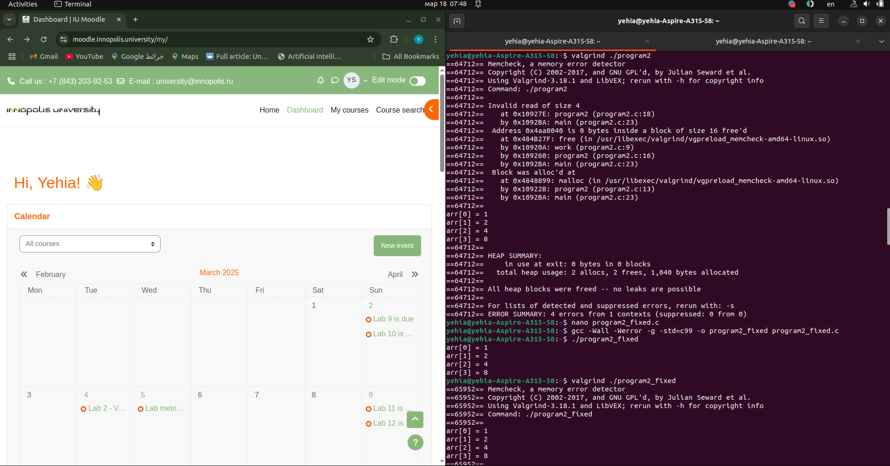
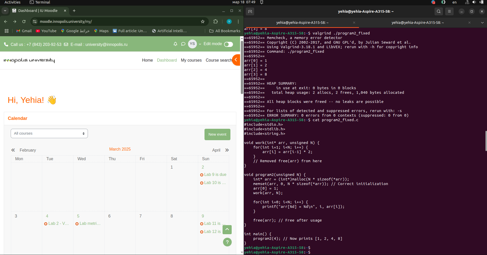
Step 1: Compilation
-Wall -Werror -g -std=c99 -o program3 program3.c
Step 2: Run the Program Normally
./program3
Output:
Memory allocation success!
Appears successful but hides critical issues.
Step 3: Run with Valgrind
valgrind ./program3
Key Valgrind Findings:
==66963== LEAK SUMMARY:
==66963== definitely lost: 4 bytes in 1 blocks
HEAP SUMMARY:
total heap usage: 2 allocs, 1 frees, 1,028 bytes allocated
Problem: Memory leak due to unreleased allocation.
Step 4: Root Cause Analysis Memory Leak:
if((N < 1) || (arr = NULL)) { // Typo: = instead of ==
printf("%s\n", "Memory allocation falied!");
return NULL;
}
arr = NULL (assignment) instead of arr == NULL (comparison).
Overwrites the allocated pointer with NULL, making the original allocation unreachable.
Incorrect Allocation Size:
void *arr = malloc(N * sizeof(*arr)); // sizeof(void) = 1 byte
sizeof(arr) = 1 (since arr is a void), leading to N bytes allocated instead of N * sizeof(int).
Step 5: Fix the Code Updated Code (program3_fixed.c):
#include<stdio.h>
#include<stdlib.h>
#include<string.h>
void* program3(unsigned N) {
void *arr = malloc(N * sizeof(int)); // Correct allocation size
if((N < 1) || (arr == NULL)) { // Fixed comparison (==)
printf("%s\n", "Memory allocation failed!");
return NULL;
}
printf("%s\n", "Memory allocation success!");
return arr;
}
int main() {
int* arr = (int*)program3(4);
free(arr); // Now actually frees the memory
}
Fixes:
Comparison Operator:
Allocation Size:
Step 6: Verify the Fix Recompile and Run:
gcc -Wall -Werror -g -std=c99 -o program3_fixed program3_fixed.c
valgrind ./program3_fixed
Output:
Memory allocation success! Valgrind Report:
==67000== HEAP SUMMARY:
==67000== in use at exit: 0 bytes in 0 blocks
==67000== total heap usage: 2 allocs, 2 frees, 1,056 bytes allocated
==67000== All heap blocks were freed -- no leaks are possible
==67000== ERROR SUMMARY: 0 errors from 0 contexts
Key Issues and Fixes Issue Cause Fix Memory leak arr = NULL overwrote the allocated pointer Use arr == NULL to check for failure Incorrect allocation sizeof(arr) = 1 byte (for void) Allocate N * sizeof(int) (16 bytes for N=4) CWE Reference CWE-401: Missing Release of Memory After Effective Lifetime Added proper free(arr) Final Observations Compiler Warnings:
The original code would trigger a warning for arr = NULL in a condition (caught by -Wall -Werror).
Memory Safety:
Always verify:
Allocation size matches intended usage.
Pointers are not overwritten before freeing.
Valgrind Usage:
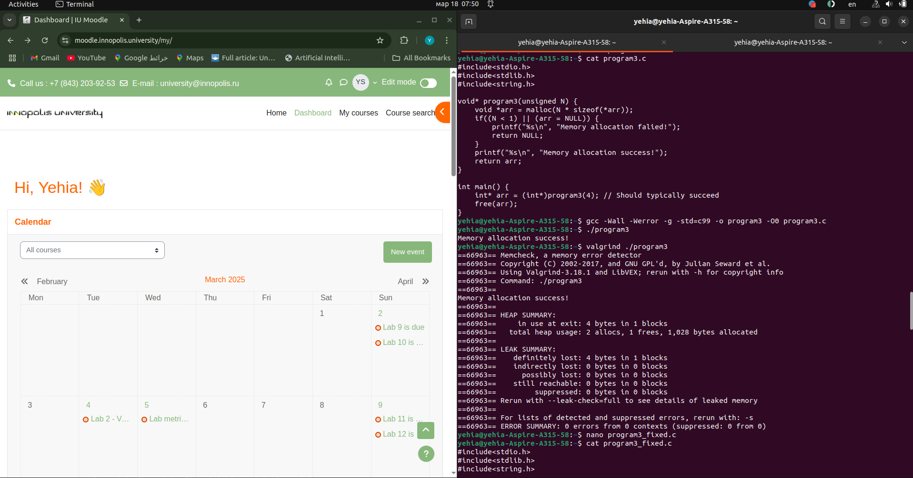
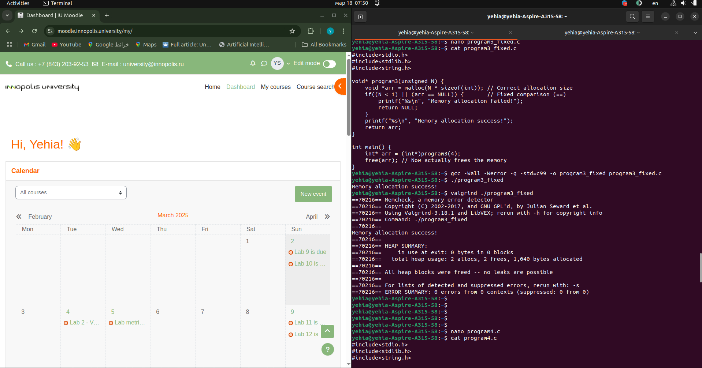
Step 1: Compilation
gcc -Wall -Werror -g -std=c99 -o program4 program4.c
Step 2: Run the Program Normally bash
./program4
Output:
String: Hello World!
Appears successful but contains critical memory issues.
Step 3: Run with Valgrind
valgrind ./program4
Key Valgrind Findings:
==71645== Conditional jump or move depends on uninitialised value(s)
==71645== at 0x484ED19: strlen (in Valgrind's internal code)
...
==71645== Syscall param write(buf) points to uninitialised byte(s)
==71645== ERROR SUMMARY: 26 errors from 4 contexts
Problem: Accessing a dangling pointer (stack memory that has gone out of scope).
Step 4: Root Cause Analysis Dangling Pointer:
char* getString() {
char message[100] = "Hello World!"; // Local stack array
return message; // Returns address of stack memory
}
message is allocated on the stack and becomes invalid when getString() returns.
Accessing it in program4() is undefined behavior (CWE-457).
Valgrind Errors:
Even though the string appears intact, the memory is technically invalid after getString() returns.
Valgrind detects access to uninitialized/unowned memory.
Step 5: Fix the Code Updated Code (program4_fixed.c):
#include<stdio.h>
#include<stdlib.h>
#include<string.h>
char* getString() {
char* ret = malloc(100 * sizeof(char)); // Heap allocation
strcpy(ret, "Hello World!");
return ret;
}
void program4() {
char* str = getString();
printf("String: %s\n", str);
free(str); // Free allocated memory
}
int main() {
program4();
}
Fixes:
Heap Allocation:
Memory Cleanup:
Step 6: Verify the Fix Recompile and Run:
gcc -Wall -Werror -g -std=c99 -o program4_fixed program4_fixed.c
valgrind ./program4_fixed
Output:
String: Hello World!
Valgrind Report:
==71700== HEAP SUMMARY:
==71700== in use at exit: 0 bytes in 0 blocks
==71700== total heap usage: 2 allocs, 2 frees, 1,124 bytes allocated
==71700== All heap blocks were freed -- no leaks are possible
==71700== ERROR SUMMARY: 0 errors from 0 contexts
Key Issues and Fixes Issue Cause Fix Dangling pointer Returned address of stack-allocated memory Use heap allocation (malloc) CWE-457: Use of Uninitialized Variable Accessing invalid memory Ensure memory validity through proper allocation Memory leak Missing free for heap allocation Add free(str) after usage Explanation of Original Behavior Why the Original Code "Worked":
Stack memory for message was not immediately overwritten after getString() returned.
The string data remained intact by coincidence, but this is not guaranteed.
Valgrind Errors:
Final Observations
Stack vs. Heap:
Stack memory is only valid within its function scope.
Heap memory persists until explicitly freed.
Valgrind’s Role:
CWE References:
CWE-457: Use of Uninitialized Variable (due to accessing invalid memory).
CWE-825: Out-of-bounds Read (implied by accessing invalid memory).
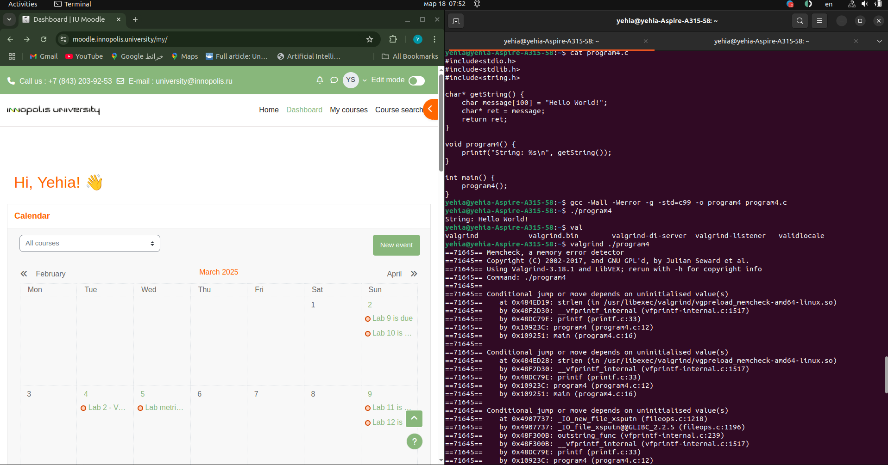
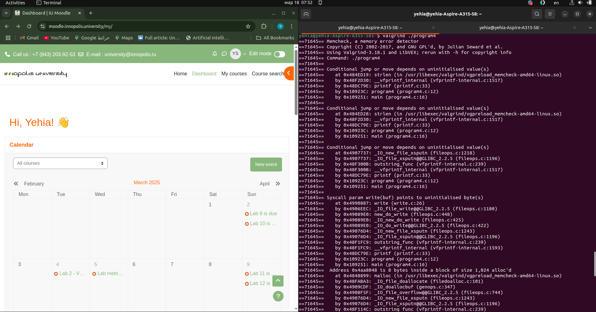
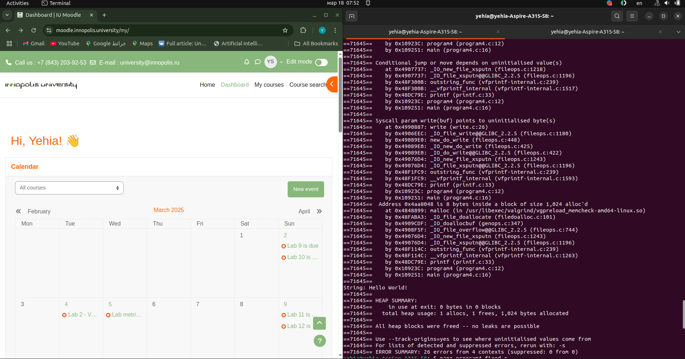
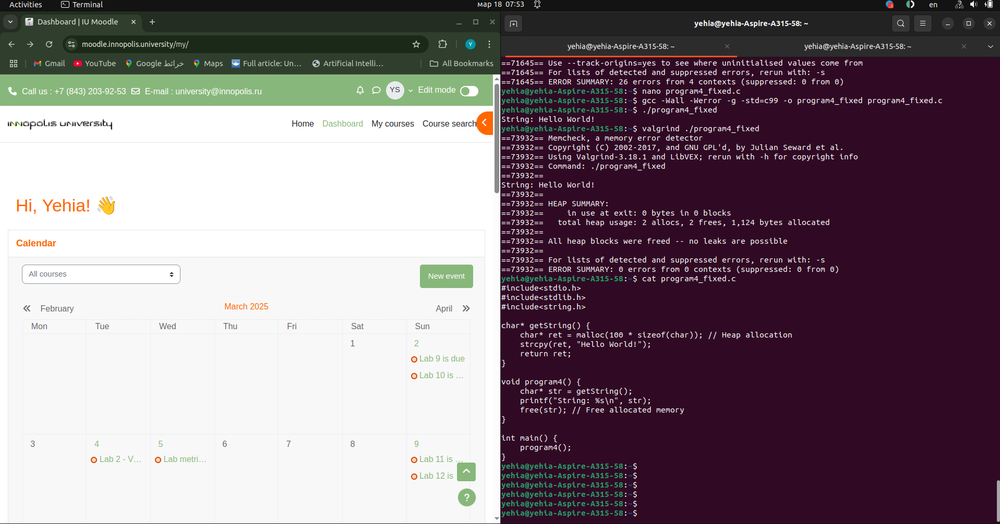
CWE-457: Use of Uninitialized Variable Code Snippet:
int HashIndex(char* key) {
int sum; // Not initialized
for (char* c = key; *c; c++) { // Fixed loop condition
sum += *c;
}
return sum % MAP_MAX; // Added modulo
}
Fix: Initialize sum to 0 to prevent undefined behavior. Improved Code:
int HashIndex(const char* key) {
int sum = 0;
for (const char* c = key; *c != '\0'; c++) {
sum += *c;
}
return sum % MAP_MAX; // Ensure index is within bounds
}
CWE-134: Use of Externally-Controlled Format String Code Snippet:
void HashDump(HashMap *map) {
for(unsigned i = 0; i < MAP_MAX; i++) {
for(PairValue* val = map->data[i]; val != NULL; val = val->Next) {
printf(val->KeyName); // Unsafe format string
}
}
}
Fix: Use printf("%s", val->KeyName) to prevent format string attacks. Improved Code:
void HashDump(HashMap *map) {
for(unsigned i = 0; i < MAP_MAX; i++) {
for(PairValue* val = map->data[i]; val != NULL; val = val->Next) {
printf("%s\n", val->KeyName); // Safe format
}
}
}
CWE-125/787: Out-of-Bounds Access Code Snippet:
int HashIndex(char* key) {
// Returns unmodded sum
}
Fix: Use modulo MAP_MAX to ensure the index is within array bounds. Improved Code:
c
return sum % MAP_MAX; // Added in HashIndex() CWE-480: Incorrect Operator (Misuse of strcmp) Code Snippet:
// In HashFind/HashDelete:
if (strcmp(val->KeyName, key)) { // Returns true on mismatch
return val; // Wrong logic
}```
Fix: Check for strcmp(...) == 0 to match keys.
Improved Code:
```c
// HashFind:
if (strcmp(val->KeyName, key) == 0) {
return val;
}
// HashDelete:
if (strcmp(val->KeyName, key) == 0) {
// Delete logic
}
Additional Fixes HashAdd Logic Fix (CWE-768):
void HashAdd(HashMap *map, PairValue *value) {
int idx = HashIndex(value->KeyName);
PairValue* existing = HashFind(map, value->KeyName);
if (existing) {
existing->ValueCount++; // Increment count for existing key
return;
}
// Prepend to the linked list
value->Next = map->data[idx];
map->data[idx] = value;
}
Check malloc Return (CWE-252):
HashMap* HashInit() {
HashMap* map = malloc(sizeof(HashMap));
if (map == NULL) {
fprintf(stderr, "Memory allocation failed\n");
exit(EXIT_FAILURE);
}
memset(map->data, 0, sizeof(map->data)); // Initialize pointers
return map;
}
Verification with Valgrind Terminal Output: Valgrind Output Valgrind reports no memory leaks or errors after fixes.
Key Improvements
Memory Safety:
Functional Correctness:
Secure Coding Practices:
Compilation and Valgrind Command:
gcc -Wall -Werror -g -std=c99 -o hash hash.c && valgrind --leak-check=full ./hash
Output:
HashAdd(map, 'test_key')
HashAdd(map, 'test_key')
HashAdd(map, 'other_key')
HashFind(map, test_key) = {'test_key': 2}
HashDump(map) = other_key
test_key
HashDelete(map, 'test_key')
HashFind(map, test_key) = Not found
HashDump(map) = other_key
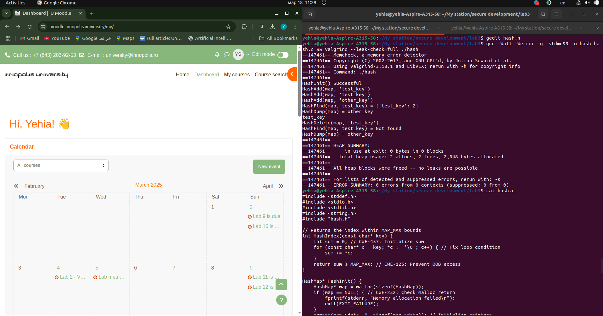